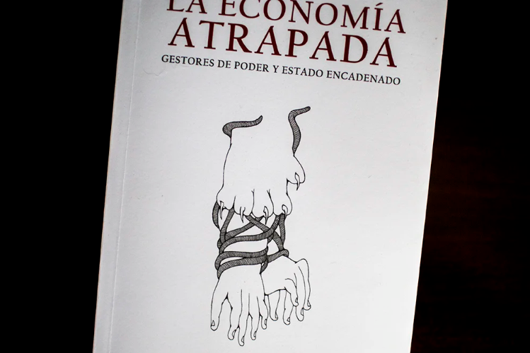
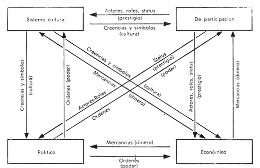

La economía atrapada
La economía atrapada es un libro escrito por Juan Alberto Fuentes Knight, economista guatemalteco, ex ministro de Finanzas Públicas en Guatemala, director de la División de Desarrollo Económico de la CEPAL en Santiago, Chile, y presidente del Consejo de Supervisión de Oxfam Internacional.
Tiene un doctorado en economía por la Universidad de Sussex, Inglaterra, y una maestría en la misma materia por la Universidad de Toronto, Canadá. Fundó y fue director del Instituto Centroamericano de Estudios Fiscales (Icefi), ha trabajado con diversos organismos nacionales e internacionales, coordinó el Informe de Desarrollo Humano de Guatemala durante varios años y fue parte del equipo de investigación que realizó el informe de la Comisión para el Esclarecimiento Histórico (CEH). También es autor del libro Rendición de cuentas y ha sido columnista y autor de diversos artículos especializados en temas de economía política.
El libro “La Economía atrapada”, gestores de poder y estado encadenado, es una contribución al conocimiento ciudadano de la relación entre economía y política en Guatemala. En un lenguaje sencillo, cuenta la historia de cómo poderosos consorcios familiares guatemaltecos, en alianza con élites políticas, encadenaron al Estado para promover sus intereses y evitar la implementación de políticas de transformación económica y social.
El exministro de Finanzas presenta un libro cargado de anécdotas, investigaciones y análisis económicos que retratan en un formato sencillo cómo, históricamente, un pequeño grupo recibió tratos preferenciales de los gobiernos de Guatemala. Hoy, décadas más tarde, esa misma élite articula un discurso de fobia al mismo Estado que le permitió ser gigante.
El libro indaga en el origen y desarrollo de estos consorcios y de otros actores económicos, evalúa el desempeño de exportadores tradicionales y no tradicionales, e identifica casos emblemáticos que ilustran la historia de la economía en el país y que se reflejan en la evolución de la inversión, el empleo y la productividad. Relata la experiencia de la multitud de familias, pequeños negocios y trabajadores por cuenta propia que sobreviven precariamente, produciendo y vendiendo desde maíz y frijol hasta tortillas o servicios de comida, no olvida a los migrantes y la economía del crimen, síntomas de las carencias del desarrollo económico nacional. El libro también propone un nuevo contrato social que sustituya los tratos económicos actuales, con el fin de impulsar un crecimiento económico sostenido e incluyente.
El autor explica que el libro está escrito para poder ser leído por quienes no tienen especialización en temas económicos. Aunque para entenderlo mejor, es importante tener claras cuatro categorías a las que hace alusión constantemente, y que ayudan a entender a los actores económicos de Guatemala según su contexto, los beneficios con los que creció, o las desventajas con las que le impide posicionarse
1. Gestores de poder: son los que más poder concentran, producen para el mercado interno, pero en condiciones de competencia imperfecta, en términos de monopolios. Altamente concentrados donde tienen ganancias muy altas precisamente por ser monopolios u oligopolios, pero para el mercado interno. Están incluidos sectores industriales como la cerveza, cemento, aguas gaseosas, bebidas alcohólicas, también productos metálicos. El autor los asocia a las grandes familias Castillo Novella, Gutiérrez, consorcios familiares como los Leal y los Campollo.
2. Exportadores Rentistas: son los que producen y exportan, pero con base al acceso a tierra y a recursos naturales. La renta viene de ese acceso privilegiado que tienen a esos recursos naturales. Están incluidas el azúcar, la palma y el banano.
3. Magos: son los exportadores no tradicionales que están en mercados ya competitivos, quienes tienen que participar donde prevalece la competencia porque son mercados internacionales. Aquí están los exportadores de vestuario de textiles, de vegetales, de frutas, también de servicios incluyendo turismo y centros de llamada u otros servicios de negocios.
4. La infantería: produce para el mercado interno, pero en condiciones de competencia. A diferencia de los gestores de poder que están en condiciones oligopólicas, aquí está la mayoría de la gente, desde productores agrícolas de maíz, frijol, hortalizas hasta productores industriales pero pequeños, como tortillerías, panaderías, carnicerías, servicios, de alojamiento.
El libro detalla una gran cantidad de valioso material analítico y críticamente descriptivo que permite un estudio en profundidad de las estructuras de poder ejercidas, la apropiación familiar hereditaria de ventajas y privilegios por parte de la élite y el papel del Estado como instrumento y objetivo de estos fines. Las familias de élite-consorcios hereditarios son la fuente del desequilibrio, la ineficiencia, la búsqueda de rentas parasitaria y la obsolescencia del modelo económico local. "Ayudaron a definir su carácter y regular su crecimiento", y de hecho fueron responsables de un modelo económico local que tenía "los rasgos dominantes del capitalismo jerárquico, según el académico estadounidense Ben Ross Shneider, este patrón tiende a dominar en América Latina”.
La inversión privada en Guatemala es de las más bajas en América Latina, esto porque hay ciertos empresarios que reinvierten una parte importante de sus modestas ganancias, pero hay otros con abundantes recursos que no lo hacen. Hay grandes consorcios familiares, con mucho poder y apellidos conocidos, que obtienen fuertes ganancias, pero reinvierten muy poco en nuevas instalaciones, maquinaria y equipo.
Operan en sectores concentrados de la industria, telecomunicaciones y energía, especulan en mercados financieros internacionales, compran empresas en el exterior y colocan sus ahorros en cuentas externas. En Guatemala se limitan a invertir una cuota reducida de sus ganancias en bienes inmuebles y centros comerciales, ensamblan bienes que venden en el mercado nacional o centroamericano con abundante publicidad y franquicias extranjeras, pero sin mayor transformación tecnológica, invierten en un gran centro comercial y no en una universidad tecnológica, raramente exportan a mercados internacionales exigentes.
Algunos exportadores, como los de azúcar, han buscado invertir en centros propios de desarrollo tecnológico, pero este no es el patrón que predomina entre los consorcios familiares más grandes. Hay, en cambio, numerosos emprendedores, cooperativas o empresas de tamaño mediano que invierten una proporción importante de sus ganancias para crecer, exportan productos no tradicionales como vestuario y textiles, muebles o diversas frutas y verduras, o atienden a turistas, buscan transformar sus productos, servicios y procesos para ser más eficientes e innovadores y competir exitosamente en mercados internacionales de bienes y servicios. Enfrentan una feroz competencia en el mercado interno, y están sujetos a abusos de los grandes consorcios familiares, tienen bajas ganancias, pero hacen un esfuerzo por invertir, aunque sean una mínima parte de lo que ganan, se acercan a lo que un conocido antropólogo estadounidense, Sol Tax, llamó el capitalismo del centavo. Si este conjunto de empresarios ya sea los exportadores de productos y servicios no tradicionales, o los que atienden mercados internos donde prevalece la competencia, contara con más crédito y respaldo técnico y político, podrían conducir a Guatemala por una senda de mucho mayor inversión y crecimiento.
Guatemala está atrapada en un círculo de economía vicioso en el que la insuficiente inversión en la infancia provoca la transmisión de la pobreza y la desigualdad de una generación a la siguiente, frena el crecimiento económico, resultando en deterioro de la cohesión social y política.
Algunos datos importantes que conocer son los siguientes:
• A pesar de la estabilidad macroeconómica y un crecimiento económico de 3.0% el 2018, la presión fiscal del país continua alrededor del 10% del Producto Interno Bruto, PIB, por debajo del promedio de la región.
• La pobreza ha venido aumentando de 51.2% en el 2006 a 59.3% en el 2014.
• Guatemala es un país con alta desigualdad de ingresos, expresado en el Coeficiente de GINI de 48.3 en el 2014.
• La inversión pública infancia es de apenas el 3% del PIB (la mitad que Honduras o Costa Rica), claramente insuficiente para mejorar la salud, nutrición y educación de los niños.
• La falta de oportunidades y la violencia empujan cada día a cerca de 230 niñas, niños y adolescentes a migrar.
• Los niveles de violencia en Guatemala son muy altos, afectando a toda la población, todos los niveles socio económicos y de manera especial a las mujeres y la niñez, y tiene un altísimo costo económico y social para el país
• Según el Informe 2018 de Latino barómetro, el apoyo a la democracia en Guatemala ha disminuido del 50% en 1996 al 28% en el 2018. La confianza en el Congreso es del 17% y en los Partidos Políticos sólo del 11% al 2018.

Las transacciones entre las élites económicas y políticas no son necesariamente perjudiciales para el desarrollo de la productividad y la eficiencia y el progreso de la estructura económica, pero eso no significa que cualquier transacción sea beneficiosa para la sociedad, y no significa que todas las transacciones sean beneficiosas para la sociedad. Para alcanzar el objetivo del bienestar humano, el tratamiento es necesario y suficiente, y los seres humanos son el sujeto central del orden social, mientras que las actividades económicas son sólo una parte del orden social.
En Guatemala, estos acuerdos han tenido históricamente una distorsión estructural que no les permite ser un “acuerdo” pleno entre actores autónomos de la estructura social. Con pocas excepciones, no fueron negociaciones entre empresarios y miembros de la clase política, ni entre quienes estaban dispuestos a correr riesgos y progresar, y políticos serios o funcionarios competentes y honestos.
Desde sus orígenes coloniales, no fueron meras negociaciones, sino luchas y disputas mediante chantajes y extorsiones para asegurar privilegios para los primeros y beneficios para los segundos. La innovación, la eficiencia o el crecimiento de la productividad y los modelos económicos nunca fueron un objetivo explícito, y mucho menos una prioridad; en todo caso, fueron una consecuencia accidental y no sistemáticamente previsible de estos procesos.
Desde sus orígenes coloniales, no fueron meras negociaciones, sino luchas y disputas mediante chantajes y extorsiones para asegurar privilegios para los primeros y beneficios para los segundos. La innovación, la eficiencia o el crecimiento de la productividad y los modelos económicos nunca fueron un objetivo explícito, y mucho menos una prioridad; en todo caso, fueron una consecuencia accidental y no sistemáticamente previsible de estos procesos.
Lo que han estado persiguiendo y continúan persiguiendo es imponer la hegemonía con un modelo depredador de recursos y mano de obra, sin más limitaciones que el agotamiento de los factores de creación de riqueza. A partir de esto, no tienen una visión estratégica de un Estado eficiente que garantice el bienestar de todos, más bien, porque el Estado colonial es un “obstáculo inevitable” porque lo necesitan como instrumento de dominación y dominación. Independientemente de las razones, métodos y degradación de la humanidad, siempre y cuando permitan la dominación, mantenimiento y profundización de sus privilegios y despojo de las clases bajas, especialmente de los pueblos indígenas, pero como forma de control, resulta molesto para ellos. Asimismo, el Estado colonial español fue un obstáculo.
Con este panorama en mente, el examen que hace Fuentes Knight del 'acuerdo' entre el elitismo y la clase política entre 1986 y 2020 es relevante para examinar críticamente el modelo económico actual, su funcionamiento, su extraordinaria importancia, pero sobre todo, su irremediable obsolescencia, que está en el centro de una crisis sin retorno a los modelos económicos y a las instituciones políticas, el país fue arrastrado al abismo.
En la descripción crítica de los autores de The Trapped Economy, el tratamiento fiscal económicamente desfavorable de la élite familiar en la segunda mitad del siglo pasado se hace evidente por su retroceso y desigualdad de privilegios, basta centrarse en los que tienen que ver con los productores de trigo o el monopolio azucarero en el occidente del país.
La pregunta tras la reflexión es qué hacer cuando el modelo se descomponga, o qué cambios hay que hacer antes de llegar a este punto. Esta afirmación es pertinente porque el modelo colapsará si continúa por el mismo camino actual, el tiempo que tardará en hacerlo depende de diversos factores internos o externos que aceleran o desaceleran el proceso, pero la tendencia es segura.
Lo que está claro es que el subsistema económico debe trabajar dinámicamente con otros subsistemas sociales, como los subsistemas culturales, participativos y políticos, para permitir que la sociedad en su conjunto se movilice, crezca, cambie y encuentre la cohesión que la hace funcionar.
Actualmente, el modelo está estancado en la ineficiencia de crear bienestar para las masas. La falta de productividad y el crecimiento de los bienes de capital o los procesos de mediano y largo plazo que la hacen posible debilitan el ritmo de crecimiento, detrás de esto está el índice de desigualdad de la acumulación y crecimiento de la riqueza social productiva en manos de unos pocos, lo que efectivamente imposibilita para la mayoría el acceso a una multitud de servicios, consumo y niveles de vida. Además, no parece haber una opción que pueda modificarse dentro del rango de parámetros actual. Para que esto suceda, son necesarias reformas estructurales profundas, y los sectores hegemónicos se oponen a las reformas con un activismo torpe.
En este caso, además del subsistema económico, el equilibrio y la cohesión entre las dinámicas de los otros tres subsistemas sociales es imposible, y el resultado será, tarde o temprano, la inviabilidad del modelo social, que ya existe, síntomas significativos de no gobernabilidad, conflicto social, control territorial y, más dramáticamente, por ejemplo, falta o muy mala calidad de servicios públicos básicos, salud, educación, seguridad, justicia e infraestructura popular como vivienda o comunicaciones.

En conclusión, las familias oligárquicas hereditarias, junto con el crimen organizado, los militares, la clase política y los burócratas corruptos, están decididos a mantener una situación insostenible y así llevar al país a una profunda crisis social, económica y política, profundas, de consecuencias insospechables. A pesar de que se han hecho algunas propuestas, como las propuestas por Fuentes Knight en sus escritos y referidas en el campo de la economía política, pero la línea de cambio no está clara en ningún lado, no es un asunto menor, y más aún, en una época en la que las luces y las expectativas son tan escasas.
Para finalizar y ampliar la información, a continuación, se presenta una conferencia impartida por el economista Juan Alberto Fuentes Knight acerca de su libro La Economía atrapada.
La Economía Atrapada de Juan Alberto Fuentes KnightLa Economía Atrapada de Juan Alberto Fuentes Knight 2/09/2022 - 17:30 horas - Campus Central URL
Publicado por URL, Vicerrectoría de Investigación y Proyección en Viernes, 2 de septiembre de 2022